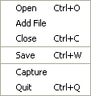

The File menu provides most of the file I/O and system functionalities.
Open SeqVis currently reads and writes the following sequence file formats:
Add File Larger dataset can be constructed by adding another sequence file. The sequence data will be appended to the current visualization views. For example, given that you already have loaded a sequence file containing an alignment of gene from species A-F, loading another sequence file for species G-L will result in displaying species A-L on the screen. A sequence file containing species A-L will be saved afterward.
Close This menu closes the visual frame (only the frame that contain the tetrahedron, not the whole window) and clear the existing dataset.
Save The existing sequence data can be saved to file in specified format. For the file format available, please see "Open".
Capture This menu allows the on screen image on the visual frame (ie the frame containing the tetrahedron) to be captured and saved to file (as PNG or JPEG) as specified by the user.
Quit This menu terminates SeqVis immediately. All unsaved data will be discarded. The window will be closed.